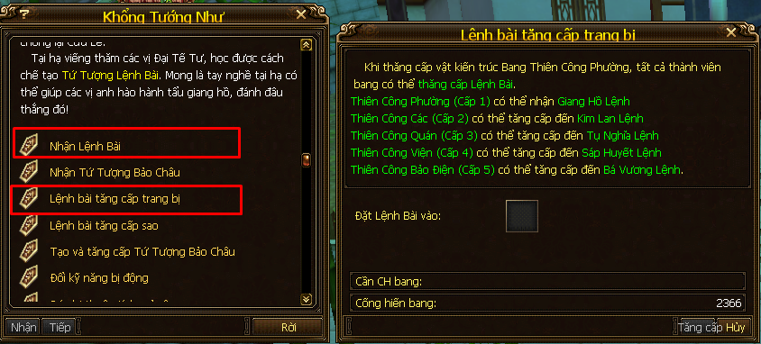
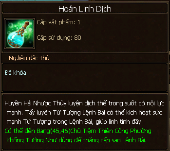
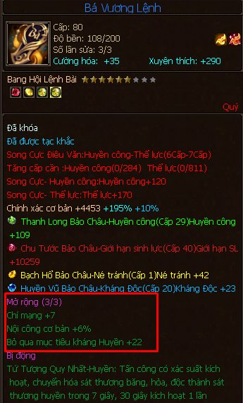

Lệnh Bài Bang Hội¶
- Lệnh Bài Bang Hội là trang bị thứ 15 xuất hiện vào phiên bản Cuồng Chiến Thiên Hạ, Lệnh Bài giúp tăng thêm các điểm thuộc tính cơ bản và thuộc tính tấn công, chính xác, né tránh, kháng bằng cách tăng cấp Tứ tượng bảo châu được khảm trên Lệnh bài mà theo mình đánh giá là khi tăng cấp tối đa (cấp 50) sẽ gần ngang một viên ngọc 6 (thể lực, huyết, thuần tinh tinh thạch…)
- Các thao tác về Lệnh bài bang hội đều ở NPC Thiên Công Phường - Khổng Tướng Như trong Thành thị bang hội (Tọa độ 45, 45 - Chữ Võ Cụ trên bản đồ).
Cấp Độ Lệnh Bài¶
Mới đầu tốn 100 điểm cống hiến bang hội để nhận lệnh bài cấp 1 - Giang Hồ Lệnh, sau đó tiếp tục dùng điểm cống hiến bang hội để nâng cấp.
Trước tiên là nhận lệnh bài cấp 1 sau đó tiếp tục nâng cấp nó lên!
Có 5 cấp, yêu cầu và thay đổi khi thăng cấp lệnh bài như sau:
- Cấp 1: Giang Hồ Lệnh
- Yêu cầu: Kiến trúc Thiên Công Phường cấp 1 (bang cấp 1).
- Được khảm 1 Tứ Tượng Bảo Châu.
- Cấp 2: Kim Lan Lệnh
- Yêu cầu: Kiến trúc Thiên Công Phường cấp 2 (bang cấp 2).
- Được khảm 2 Tứ Tượng Bảo Châu và có thể mở 1 dòng thuộc tính mở rộng.
- Cấp 3: Tụ Nghĩa Lệnh
- Yêu cầu: Kiến trúc Thiên Công Phường cấp 3 (bang cấp 3).
- Được khảm 3 Tứ Tượng Bảo Châu và có thể mở 2 dòng thuộc tính mở rộng.
- Cấp 4: Sáp Huyết Lệnh
- Yêu cầu: Kiến trúc Thiên Công Phường cấp 4 (bang cấp 4).
- Được khảm 4 Tứ Tượng Bảo Châu và có thể mở 3 dòng thuộc tính mở rộng.
- Cấp 5: Bá Vương Lệnh
- Yêu cầu: Kiến trúc Thiên Công Phường cấp 5 (bang cấp 5).
- Được học kỹ năng bị động của lệnh bài.
- Cấp 1: Giang Hồ Lệnh
Vì vậy mọi người cũng hay gọi lệnh bài bang hội là Bá Vương Lệnh vì ai ai cũng gắng nâng nó lên cấp 5 - Bá Vương Lệnh.
Cấp Sao Lệnh Bài¶
Lệnh bài có mức sao tối đa là 8, mức sao càng cao thì hiệu quả của thuộc tính mở rộng và kỹ năng bị động càng cao.

Trên hình là lệnh bài của LingYun chỉ mới có 6 sao :(
Dùng vật phẩm Hoán Linh Dịch để nâng sao lệnh bài.
- Hoán Linh Dịch có được bằng cách mua trong tiệm Bách Bảo Các của Bang hội (do Bang chủ/Phó bang chủ mở hằng tuần), Kinh Hỷ Tam Liên..
Hình ảnh về vật phẩm Hoán Linh Dịch dùng để nâng sao lệnh bài
Thuộc Tính Mở Rộng¶
Có thể tấy (đúc) tối đa 3 dòng thuộc tính mở rộng (các dòng có thể trùng nhau) gồm: + Giới hạn sinh lực, giảm kháng, chí mạng, nội công (%),..
- Một số nhân vật BOSS có xu hướng tẩy ra 3 dòng + % nội công.
Hình ảnh về dòng thuộc tính mở rộng của Lệnh bài
Dùng vật phẩm Thiên Hoang Tinh Thạch để tẩy thuộc tính mở rộng.
Có được vật phẩm này bằng cách mua trong trong tiệm Bách Bảo Các của Bang hội, event Kinh Hỷ Tam Liên..

Hình ảnh về vật phẩm Thiên Hoang Tinh Thạch dùng để tẩy (đúc) lại dòng thuộc tính mở rộng trên Lệnh bài.
Cấp sao lệnh bài càng cao thì điểm cộng của thuộc tính mở rộng càng cao.
Tứ Tượng Bảo Châu¶
Hình ảnh về một loại Bảo châu có thể khảm vào lệnh bài
- Là các viên bảo thạch đặc biệt khảm thêm vào Lệnh bài, chia làm 4 loại với 4 màu sắc và tên gọi “hoành tráng” khác nhau:
- Chu Tước Bảo Châu (màu đỏ): tăng thuộc tính cơ bản của nhân vật: Cường lực/Nội lực/Trí lực/Thể lực/Thân pháp/Giới hạn sinh lực.
- Thanh Long Bảo Châu (màu lục): tăng thuộc tính tấn công: Băng/Hỏa/Huyền/Độc công.
- Huyền Vũ Bảo Châu (màu lam): tăng kháng Băng/Hỏa/Huyền/Độc công.
- Bạch Hổ Bảo Châu (màu vàng): tăng nội công/ngoại công/nội thủ/ngoại thủ/chính xác/né tránh.
- Tốn 50 điểm cống hiến để đổi 1 bảo châu và sau đó dùng tiền vàng và vật phẩm Phỉ Thúy Tâm Tinh để thăng cấp Tứ Tượng Bảo Châu.
- Phỉ Thúy Tâm Tinh có thể nhận được thông qua hoạt động Tụ Bảo Bồn trong bang hội (do bang chủ/pbc mở hằng ngày), các event, mua của thương gia với giá thị trường tại thời điểm viết bài 3KNB/1.
- Bảo Châu đã thăng cấp mà không ưng ý thì trước tiên cần kích toái để NPC hoàn trả lại Phỉ Thúy Tâm Tinh, sau đó tháo bảo châu đó ra và thay bảo châu khác vào (làm giống như bảo thạch vậy thôi :D).
| Đoạn | Từ cấp | Đến cấp | Vàng/1 cấp | Phỉ Thúy Tâm Tinh/1 cấp | TC Phỉ Thúy Tâm Tinh |
|---|---|---|---|---|---|
| 1 | 1 | 4 | 5 | 6 | 18 |
| 2 | 4 | 7 | 5 | 7 | 21 |
| 3 | 7 | 10 | 5 | 9 | 27 |
| 4 | 10 | 13 | 5 | 12 | 36 |
| 5 | 13 | 16 | 5 | 16 | 48 |
| 6 | 16 | 19 | 5 | 21 | 63 |
| 7 | 19 | 22 | 5 | 27 | 81 |
| 8 | 22 | 25 | 5 | 34 | 102 |
| 9 | 25 | 28 | 5 | 42 | 126 |
| 10 | 28 | 31 | 5 | 51 | 153 |
| 11 | 31 | 34 | 5 | 61 | 183 |
| 12 | 34 | 37 | 5 | 72 | 216 |
| 13 | 37 | 40 | 5 | 84 | 252 |
| 14 | 40 | 43 | 5 | 97 | 291 |
| 15 | 43 | 46 | 5 | 111 | 333 |
| 16 | 46 | 49 | 5 | 126 | 378 |
| 17 | 49 | 50 | 5 | 142 | 142 |
| TC | 2470 |
Về mặt số học thì sự thay đổi về số lượng Phỉ Thúy Tâm Tinh cần để thăng cấp Tứ Tượng Bảo Châu được chia làm 17 đợt, cứ đợt sau thì tốn bằng đợt trước + số thứ tự của đợt trước.
Kỹ Năng Bị Động¶
Lệnh bài cấp 5 - Bá Vương Lệnh thì có thể học kỹ năng bị động
Kỹ năng cơ bản có thể học mà không tốn thêm vật phẩm gì là tăng huyền/băng/hỏa/độc công (Hàn Băng Hóa Kình, Viêm Ma, Huyền Pháp, Bách Độc) hoặc giảm chính xác đối thủ, tăng né tránh bản thân.
Tất cả kỹ năng đều có xác xuất xuất hiện và chỉ kéo dài trong một thời gian (cấp sao lệnh bài càng cao thì thời gian kéo dài cũng như hiệu quả của kỹ năng càng cao).

Hình ảnh về dòng kỹ năng bị động của Lệnh bài, bấm chọn kỹ năng trong bảng chọn tại NPC Khổng Tướng Như để xem cần vật phẩm gì để học được kỹ năng mà mình muốn! Chúc vui vẻ!
Kinh Nghiệm¶
- Nên vào bang cấp 5 để nhận lệnh bài cấp cao nhất (Bá Vương Lệnh) và có thể thao tác đầy đủ các chức năng của lệnh bài.
- Tập trung nâng cấp Tứ Tượng Bảo Châu trước tiên nhất vì điểm cộng của bảo châu khi max cấp 50 là gần bằng viên ngọc cấp 6, thậm chí là đầu tư mua của dân buôn để đẩy cho nhanh ^^.
- Nên cân nhắc các bảo châu/thuộc tính mở rộng trong xu thế hiện tại: giới hạn sinh lực, chính xác, né tránh, chí mạng (thuộc tính mở rộng). Đây là nhận định của mình thôi và chỉ nên tham khảo hoặc bình luận ở kênh của mình để trao đổi thêm.
- Kỹ năng bị động: nếu nhà nghèo thì chọn kỹ năng Tứ Tượng Quy Nhất có xác suất dồn các thuộc tính khác về một thuộc tính chính trong x giây. Nếu có bang hội lớn và có điều kiện hơn thì có thể thử đổi các kỹ năng bị động khác (các vật phẩm dùng để đổi kỹ năng lệnh bài có thể mua trong tiệm Chiến công tại ông NPC gần ông tổng quản ở giữa bang hội)